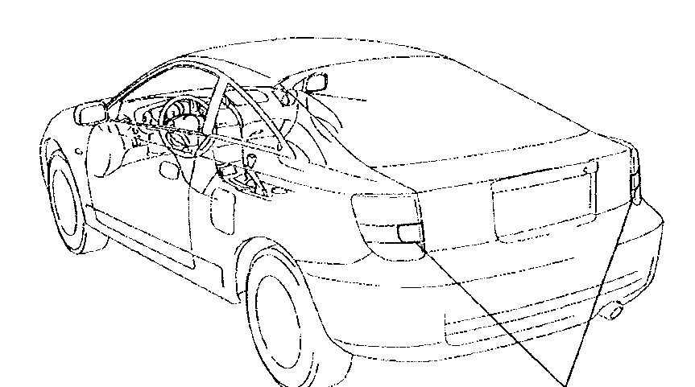

2003 · 2ZZ-GE · C60 six-speed · RHD
Celica
T-Sport
The factory manual, the fusebox as it actually is, and a record of everything that has been changed — in one place that works offline, in a garage, at night.

Where to go
Seven ways in
Everything here is driven by two sources: the bundled Toyota manual, and this specific car. They are never mixed up — each figure says where it came from.
What is wrong with it
Open faults mapped on the car, each with what to check in what order and the manual pages for the job.
Fusebox & load budget
All 35 slots from this car's own label, the four taps already in it, and a calculator that tells you what is actually left on a circuit.
Browse & search
Curated figures from the service manual, plus full-text search across all 1,972 pages.
Torque, fluids, wheels
The numbers you actually stop and look up, with a rolling-radius calculator for what the 19s do to the speedo.
What has been done
Ten mods, each with what it touched, what it draws, and the manual pages for the job — including the ones that sit on an airbag.
Service log & checks
The manual's inspection list, a running service log, and a pre-MOT check built from the manual's own service limits.
Work on the list
Bigger jobs, each with its own plan, checklists and open questions — the tail bar, and whatever comes after it.
The shape
ZZT231, as a drawing you can turn
A printable model of the car reduced to its feature lines — the same creases and silhouettes the manual draws by hand. Drag it. Hidden-line removal is on, so it reads as a drawing rather than a wire cage.
This needs WebGL, which this browser has not given the page. The manual's own drawings are all still there in the manual browser.
Read this once
What the manual is, and is not
It is Toyota RM744U1/U2 for the 2000 Celica, ZZT230/231. The engine, gearbox, brakes, steering and suspension all carry straight over to a 2003 UK T-Sport. The body electrical does not. Its instrument panel fusebox has 23 fuses; this car has 35. Where the two disagree, this site follows the car.
Circuit diagrams were published separately as the EWD, EW0399U, and are not in this manual. What you get here is component locations, removal sequences and specifications — not circuits. Nothing on this site pretends otherwise.
Search runs on the PDF's own text layer, whose character map is damaged — words come out mangled. It is good enough to find a page and useless for reading one. Every number published on this site was read off the rendered figure by eye, and every figure carries its page reference so you can check it.